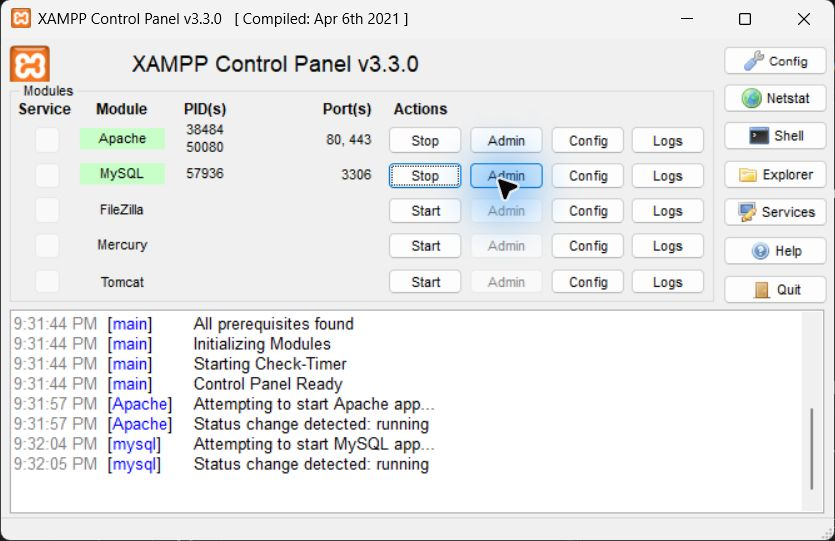

Information management · Module 20
Basic SQL: SQL functions
The power tools that transform, format and calculate data inside the database engine.
Press → or Space to start. Press ? for shortcuts.
Goals
By the end of this lesson, you can…
- Explain the purpose and classification of SQL functions.
- Enumerate and apply the types of SQL functions: aggregate, string, date/time, scalar and conversion.
- Understand how modern SQL dialects handle data transformations differently.
- Use advanced functions such as JSON manipulation and regular expressions.
Basic statements retrieve and filter data. Functions let you transform it into exactly the format your application needs.
Main lesson · 1
What are SQL functions?
SQL functions are pre-built, reusable pieces of code that perform specific operations on data in a database. They accept input values (arguments) and return a single output value.
Functions can be used in almost any part of a SQL statement, including SELECT, WHERE, ORDER BY and HAVING.
Main lesson · 2
Types of SQL functions
Aggregate
COUNT, SUM, AVG, MIN / MAXString
CONCAT, LENGTH, UPPER / LOWER, SUBSTRING, TRIMDate/Time
CURRENT_DATE, EXTRACT, DATE_ADD, DATEDIFFScalar / Math
ROUND, CEILING, ABS, SQRTConversion
CAST, CONVERTModern
JSON_EXTRACT, REGEXPTry it
Explore the function types
Pick a type to see its functions.
Main lesson · 2A to 2B
Aggregate and string functions
Aggregate functions (COUNT, SUM, AVG, MIN, MAX) calculate on a set of values and return one value. They were covered in Module 19. String functions manipulate text.
| Function | Description | Example |
|---|---|---|
CONCAT() | Joins two or more strings. | SELECT CONCAT(first_name, ' ', last_name) FROM employees; |
LENGTH() | Number of characters in a string. | SELECT LENGTH(first_name) FROM employees; |
UPPER() / LOWER() | Converts to all uppercase or lowercase. | SELECT UPPER(email) FROM employees; |
SUBSTRING() | Extracts part of a string. | SELECT SUBSTRING(email, 1, 5) FROM employees; |
TRIM() | Removes leading and trailing spaces. | SELECT TRIM(first_name) FROM employees; |
Dialect differences: standard SQL concatenates with ||, but many databases support CONCAT(). LENGTH() (MySQL/PostgreSQL) is LEN() in SQL Server.
Main lesson · 2C
Date and time functions
Extract, format or calculate differences between dates and times.
| Function | Description | Example |
|---|---|---|
CURRENT_DATE | Returns the current date. | SELECT CURRENT_DATE; |
EXTRACT() | Extracts a part of a date (year, month, day). | SELECT EXTRACT(YEAR FROM hire_date) FROM employees; |
DATEDIFF() | Difference between two dates. | SELECT DATEDIFF(CURRENT_DATE, hire_date) FROM employees; |
DATE_ADD() | Adds a time interval to a date. | SELECT DATE_ADD(hire_date, INTERVAL 10 DAY) FROM employees; |
Pro tip: date manipulation is highly dialect-specific. PostgreSQL uses hire_date + INTERVAL '10 days'; SQL Server uses DATEADD(day, 10, hire_date).
Main lesson · 2D to 2E
Scalar (math) and conversion functions
Scalar (math) functions
ROUND(): rounds to a number of decimal places.CEILING(): rounds up to the nearest integer.FLOOR(): rounds down to the nearest integer.ABS(): the absolute (positive) value.SQRT(): the square root.
-- Convert a numeric ID to a string
SELECT CAST(employee_id AS CHAR) FROM employees;
-- Convert a string to a date (some dialects)
SELECT CAST('2023-10-01' AS DATE);Conversion functions convert data from one type to another. CAST() is the standard SQL syntax.
Modern update
JSON and regex functions
Modern databases handle complex data structures, not just simple text and numbers. For a JSON or JSONB column, use JSON_EXTRACT() (MySQL) or the -> operator (PostgreSQL). Databases also support regular expressions for complex string matching.
-- Extract a key from a JSON column
SELECT profile -> 'age' FROM users;
-- Find users whose email matches a pattern
SELECT * FROM users
WHERE email REGEXP
'^[a-zA-Z0-9._%+-]+@company\.com$';Analogy
The data processing factory
- Raw data: the raw materials (steel, plastic, wire).
- Scalar/math functions: cutting and shaping machines (
ROUND,CEILING). - String functions: the assembly line that joins parts (
CONCAT) or paints them (UPPER).
- Conversion functions: the packaging department (
CAST). - Aggregate functions: the quality control manager who summarizes output (“How many items did we produce?”).
Real-world use case
AI data preparation
Before feeding data into a machine learning model or an LLM, data scientists clean it with SQL functions.
TRIM()removes accidental spaces from user input.EXTRACT(YEAR FROM purchase_date)creates a new feature for the model.LOWER()keeps text consistent before generating vector embeddings.
FAQs
Common questions
Performance implications?
Yes. Applying a function to a column in aWHERE clause (e.g., WHERE UPPER(last_name) = 'SMITH') can stop the database from using an index, making queries slow. Clean input on the application side or use functional indexes.Custom functions?
Yes. Most databases support User-Defined Functions (UDFs) or stored procedures (PL/pgSQL, T-SQL, PL/SQL). Complex business logic is often better in application code to keep the database lean and scalable.Handling NULL values?
Most functions returnNULL if any argument is NULL. Use COALESCE() (or IFNULL() in MySQL) to return the first non-null value: SELECT COALESCE(phone_number, 'Not Provided') FROM customers;Hands-on exercise
Customer data transformation
A table orders has order_id, customer_name, order_date, order_total and quantity.
- String: combine the customer’s first and last name into one uppercase column.
- Date: find the delivery date for orders made today (5-day shipping).
- Scalar: round
order_totalto the nearest whole number. - Conversion: convert
order_dateto a string. - Aggregate: find the total sales for all orders.
-- 1. String: combine and uppercase
SELECT UPPER(
CONCAT(first_name, ' ', last_name)
) AS full_name
FROM orders;
-- 2. Date: delivery date, 5 days from today
-- (Syntax varies by DB; MySQL style shown)
SELECT DATE_ADD(CURRENT_DATE, INTERVAL 5 DAY)
AS delivery_date
FROM orders;
-- 3. Scalar: round the total
SELECT ROUND(order_total) AS rounded_total
FROM orders;
-- 4. Conversion: date to string
SELECT CAST(order_date AS CHAR) AS date_string
FROM orders;
-- 5. Aggregate: total sales
SELECT SUM(order_total) AS total_sales
FROM orders;Key quotes
Key definitions to remember
SQL function
A pre-built, reusable piece of code that takes arguments and returns a single value.Scalar function
Operates on an individual value, not on a whole set of rows.CAST()
Standard SQL syntax for converting a value from one data type to another.COALESCE()
Returns the first non-null value in a list.Recap
Power tools, with dialect differences
String functions clean text, date/time functions handle temporal calculations, scalar functions do math and conversion functions change data types.
Exact syntax varies between SQL dialects (MySQL, PostgreSQL, SQL Server), so always check yours.
Information Management · Module 20 · Recorded activity
Transform and summarize data
- Individual practical activity • 20 points • Suggested time: 60–90 minutes.
- Use XAMPP, the local database server and phpMyAdmin. Keep this deck and the supplied files on your computer.
- Submit your working database export, SQL statements, screenshots and activity log. Your instructor records the score.
Information Management · Module 20 · Recorded activity
Start your offline workspace
- Before class: the instructor installs and tests XAMPP and copies this activity folder to each computer. No downloads or online accounts are needed during the activity.
- Open XAMPP Control Panel. Start Apache and MySQL. XAMPP commonly bundles MariaDB under the MySQL label; these tasks use compatible SQL.
- Open http://localhost/phpmyadmin in your browser. If Apache uses another port, use the instructor-provided local address.
Offline activity · Visual sample
XAMPP ready for the activity

1. Start Apache and MySQL.
2. Both module names should turn green and their buttons should say Stop.
3. Click Admin beside MySQL to open phpMyAdmin.
Actual classroom setup sample. Your process IDs and installation folder may differ.
Information Management · Module 20 · Recorded activity
Create your activity database
Open step-by-step copyable SQL for this activity
- Choose New or Databases. Create im_m20_lastname, replacing lastname with your surname using letters, numbers and underscores. Choose utf8mb4_general_ci.
- If that database already exists, use a fresh name ending in _v2; keep your previous work.
- Select the new database in the left sidebar. Use its SQL tab to enter statements and Go to execute. Save each successful statement in a local queries.sql text file.
Information Management · Module 20 · Recorded activity
Clean text and calculate dates
- Import starter.sql. Browse customers and orders.
- Use UPPER(TRIM(customer_name)) to display clean customer names. Keep the stored originals unchanged.
- Use DATE_ADD(order_date, INTERVAL 5 DAY) to calculate a delivery date for each order. Include order_id in the output.
Information Management · Module 20 · Recorded activity
Calculate sales summaries
- Use ROUND(quantity * unit_price, 2) to display the total for each order.
- Use a JOIN and GROUP BY customer_id, customer_name to calculate sales per customer. Expected: customer 1 = 150.00; customer 2 = 75.00.
- Use COUNT(*) and SUM(quantity * unit_price) for a summary. Expected: three orders and 225.00 total. Capture results and save queries.
Information Management · Module 20 · Recorded activity
Export and restore your work
- Select your activity database. Choose Export > Quick > SQL > Go (or Export) and save database.sql.
- Choose New and create a separate empty database with _restore added to your activity database name. Select it.
- Choose Import > Choose file, select database.sql, then Go. Compare the restored table row counts with the original. Capture the restored database name and data.
Information Management · Module 20 · Recorded activity
Evidence and submission
- Create a folder named Lastname_Firstname_M20. Save database.sql and queries.sql inside it.
- Save numbered screenshots: database structure, each requested task result or expected error, and the restored database. Include the SQL and result together where possible.
- Add activity_log.txt: your name, section, date, database/server version shown by phpMyAdmin, actions completed, observations requested above, and one problem with its fix.
- Copy the folder to the instructor’s USB drive or designated local submission folder. Show the working database when asked.
Information Management · Module 20 · Recorded activity
Recorded activity criteria
- Database structure and valid data: 6 points. Full credit when all specified columns, keys and records are correct.
- Task execution and results: 8 points. Award proportionally for completed steps with correct results, including required constraint checks.
- Evidence and activity log: 4 points. Screenshots show the requested work and the log explains observations.
- Export and successful restore: 2 points. SQL backup imports into a separate database and row counts match.
Information Management · Module 20 · Recorded activity
If something stops working
- Apache or MySQL will not start: capture the Control Panel message and ask the instructor to check the port or service conflict.
- Import says table already exists: select a new empty database and import there once.
- Foreign-key error: create and populate parent tables first; child values must match existing parent IDs.
- Before closing: confirm your submission files are saved outside the browser. Browser history alone is not your activity record.
That’s a wrap
Great work
Remember: functions transform data. Check your database’s dialect for the exact syntax.